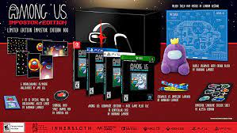

If you want to go back..... you know what to do:
Try out our change color buttton
A New Animated mario movie will be coming out in 2022!

A new Nintendo switch console is coming out! Check out the link below for more info. New switch video!

Splatoon 3 is coming to switch 2022! For more, check out the link.The Link

A new mario game is going to come out soon! Mario + Rabbids Sparks of Hope! watch this cool viedo to find out more.New mario game

A new legend of zelda port came to the Nintendo switch! It is legend of zelda skyward sword.New port

Game & Watch has launched its legend of zelda model.
Now you can get a physical copy of among us with the imposter editon box.
